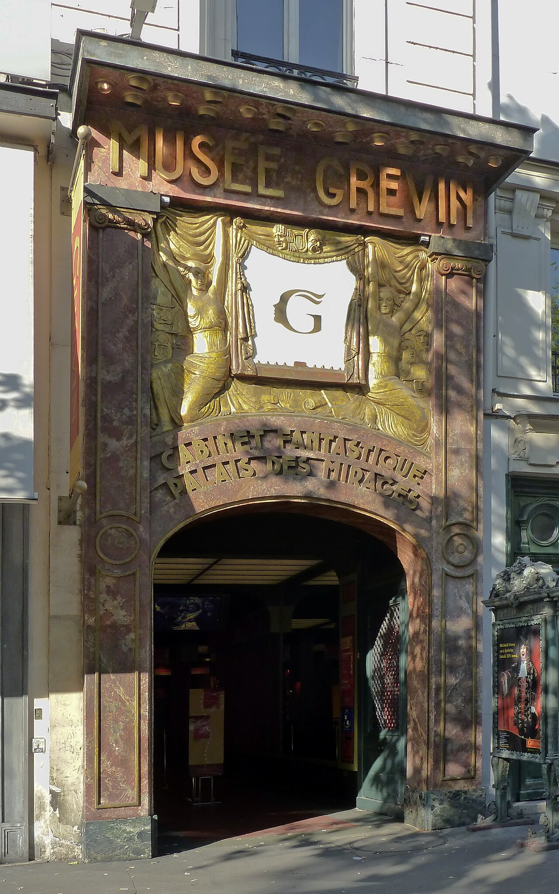

1882
Grévin naît dans le Paris du spectacle
Le musée conserve une identité de divertissement culturel liée à la fascination de la fin du XIXe siècle pour la célébrité, l’illusion et la scène.
Grévin se choisit moins pour une collection d’art que pour une sortie scénographiée : plus de 250 personnalités en cire, des décors immersifs et un patrimoine spectaculaire du Paris de la fin du XIXe et du début du XXe siècle.

Le parcours mélange personnalités actuelles, figures historiques, sport, cinéma, musique et culture populaire. La logique de visite est donc très différente d’un musée de beaux-arts : vous passez d’un univers scénographié à l’autre, avec la photographie et l’interaction comme composantes assumées de l’expérience.
Cette formule convient particulièrement à une sortie familiale ou à un groupe qui cherche une activité culturelle légère et visuelle. Si votre priorité est l’histoire de l’art ou l’observation d’objets originaux, un autre musée parisien sera plus pertinent.
Le site officiel annonce plus de 250 personnalités.
Le musée conserve une identité de divertissement culturel liée à la fascination de la fin du XIXe siècle pour la célébrité, l’illusion et la scène.
Ce dispositif de lumière et de miroirs est issu d’un projet présenté à l’Exposition universelle de 1900. Il donne au parcours une dimension patrimoniale que les seules figures de cire ne résument pas.
Personnalités et univers changent avec l’actualité culturelle. Ce caractère mouvant fait partie du principe de Grévin et explique pourquoi une liste détaillée de célébrités vieillit vite.
Sources : patrimoine architectural de Grévin et site officiel.
Grévin publie un calendrier quotidien : les heures d’ouverture et de fermeture varient selon la date et les événements. Le dernier accès intervient généralement une heure avant la fermeture indiquée.
Le billet daté adulte est proposé à partir de 21 € et le billet enfant à partir de 16 €, avec tarification dynamique. Le billet non daté est affiché à 28 € par adulte et 19,80 € par enfant. Les moins de 5 ans sont gratuits.
10 boulevard Montmartre, Paris 9e. Métro lignes 8 et 9, station Grands Boulevards.